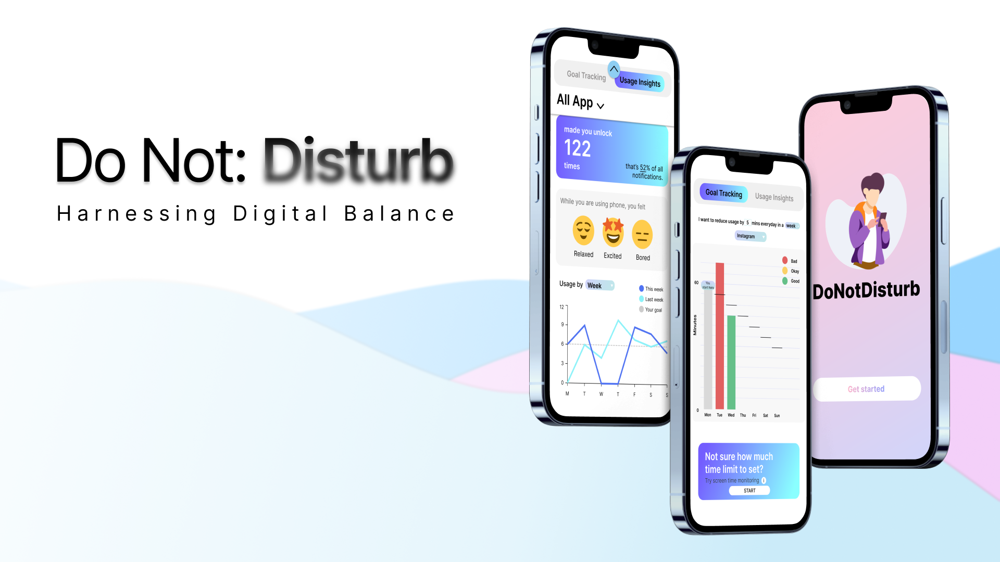
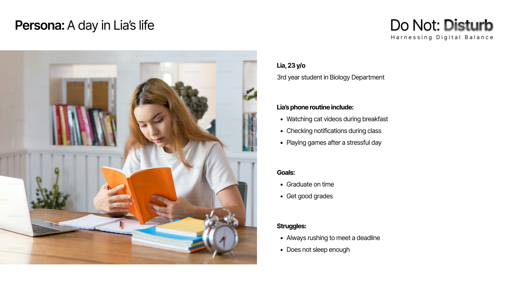
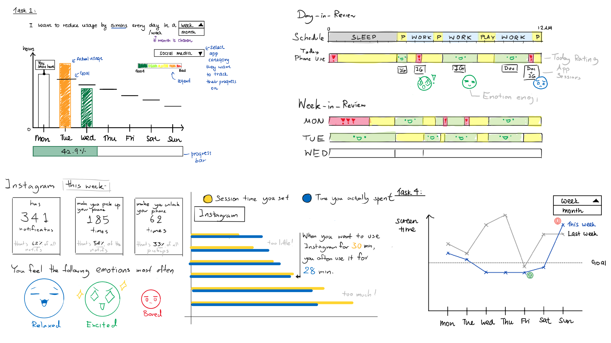
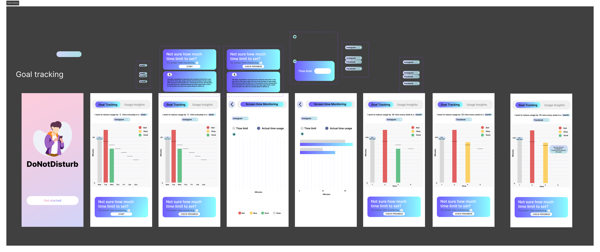
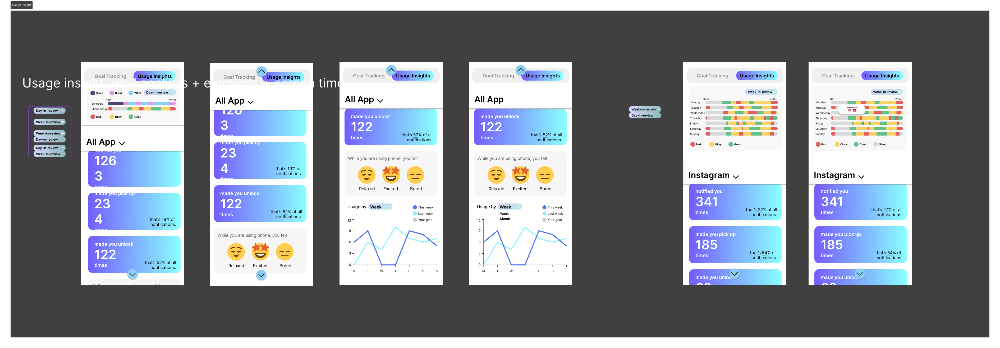
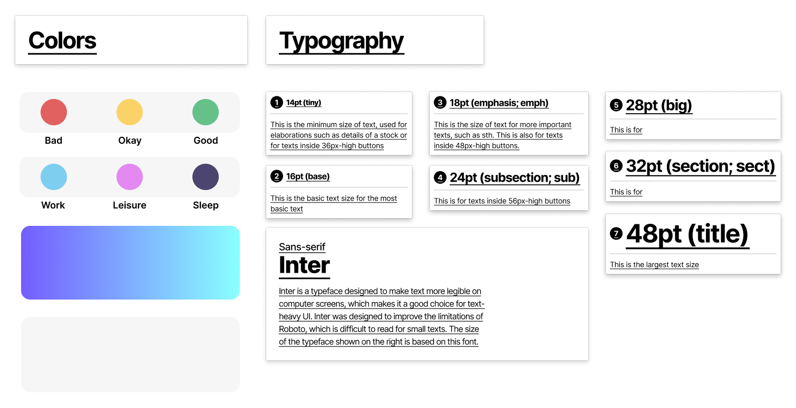

Do Not Disturb

Problem
Our phones provide us with all the connections - to our friends, to social media, entertrainment, and so on. Phones, as computational machines, are also able to collect the data of our usage. Many phones offer insights about the usage of our screen time and options to limit it – but is it effective? We want to find a more sustainable way to improve screen time usage, balancing productivity and personal entertrainment.
Interview
We interviewed 7 university students (5 undergraduates, 1 graduate, 1 exchange student).
Target Audience
Our audience is university students whose productivity, sleeping health, and daily lives are impacted by phone usage, and wish to reduce it.
Interview Structure
Our goal is to learn how could we improve sleeping habits, provide less distraction and increase productivity amongst university students. We hope that university students will start caring about screen time data. Therefore, our questions are divided into following categories:
- Sharing data
| Sharing data of last month screen time and notification data - General well-being
| How are their sleep habits, anxiety, time-schedule? How does their phone contribute to that? - Phone settings
| Do they use any settings filtering notifications? Do they limit their app usage? - Habits
| How do they use phone in social situations, during their day, during class? - User Expectations
| What do they expect? Which data are they interested in?
Result Summary
- Users do not want to revolutionize their phone usage habits, but engage in small-step activities to improve their life quality like sleep and productivity.
- Users wish to balance the phone usage for both productivity and leisure.
- They want to maintain a distinct boundary between productivity and leisure, and not switch between those two back and forth.
Needs and Scenarios
Need 1: Wants to concentrate on currently performed task.
Scenario 1: In class, the target user keeps getting distracted by phone notifications.
Need 2: Wants to make the most of phone’s benefits.
Scenario 2: There are some apps, such as the music app, that keep users more focused on their tasks and increase their level of productivity.
Need 3: Wants to keep track of their productivity.
Scenario 3: Users want to know if they are being as productive as they hope to be, and whether their productivity increases or decreases.
Need 4: Wants to compare their phone usage.
Scenario 4: Users feel guilty about their phone usage when they compare it with other people with lower phone usage.
Persona
Lia is a 23 years old KAIST student in her 3rd year. She loves cats and Candy Crush. She spends lot of time in books, studing biology. She wants to graduate on time with satisfactory grades. Unfortunately, she often finds herself having not enough time and struggling to complete assignments before the deadline. Due to unstable habits, she is often tired in classes.

Visualization Design Process
We started with a session of brainstorming and paper prototypes - every member brought their ideas for how can data be shown and options to be allowed.

Then, we presented our ideas to each other and each of us wrote down on sticky notes what they liked and would like to include in final interface. We compare features we liked and combined them into five different visualization functions. Finally, we drew the first draft of the visualization.

Visualization and Interaction Design
For each of tasks we want to support, we designed the data and visual manipulations necessary to achieve the goals. This was derived from a collaborative process of filtering each other’s ideas in previous brainstorming session.
Encourage purposeful self-improvement
Data Manipulation
- Filter data by week or month and app categories.
- Allow user to input their goal of reducing their phone usage by specifying the amount they want to reduce it by and the time frame within which they want to achieve this reduction.
- Compare actual app usage and their goal.
- Show projection towards goal.
Visual Manipulation
- Color gradient that indicates the degree to which a user’s actual phone usage matches their goal.
- Select granularity and applications for which they wish to view data.
Guide ways to improve phone habits
Data Manipulation
- User inputs their schedule.
- User can filter data by app categories.
- Find an app usage event that can be improved by comparing to users’ schedule, location and goals.
Visual Manipulation
- Scroll horizontally to view all time intervals.
- Zoom in to view the data for the time interval user is interested in.
- Select the applications for which they wish to view data.
- Click and reveal advice to learn more.
Promote mindful phone usage
Data Manipulation
- Filter data by app categories.
- Allow user estimate their own usage.
- Show difference between users’ estimation and real usage.
Visual Manipulation
- Scroll horizontally to view all time intervals.
- Zoom in to view data in more details.
Motivate consistent improvement
Data Manipulation
- Filter data by week or month.
- Compare data either by week or month.
- Calculate progress and projection towards goal.
Visual Manipulation
- Select granularity.
- Visual elements to encourage/warn users.
Lo-Fi Prototype
We designed a Lo-Fi prototype of the ‘Do Not Disturb’ app based on our sketches. We divided the visualizations into two tabs:
Goal Tracking

Usage Insight

Design

Development
The code for this project can be accessed on Github
Data Processing
Using a given dataset containing App Usage events collected from real users, we process raw entries and extract usage time for each app and category.
Web Prototype
We built a web prototype using Dash that reflects the same features as Lo-Fi prototype.
My Role / Contribution
All teammates in this project worked parallely together, but my contribution was the strongest in these areas:
- Background Research - interview question preparation
- Interview Analysis - extracting problems and user needs
- Design - was responsible for ‘Week-In-Review’ feature
- Data Processing - calculating emotions and sleeping time
- Hero Image - first image on this page, including logo design
Teammates
- Zhi Lin Yap
- Siripon (Ted) Sutthiwanna